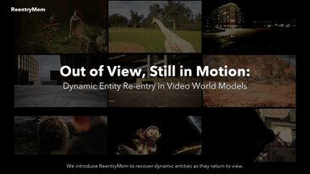
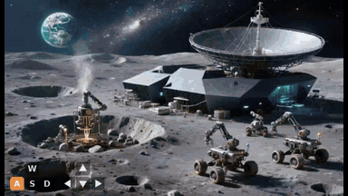
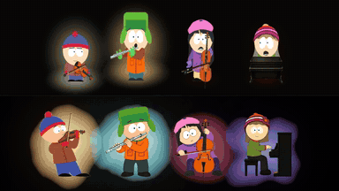

Out of View, Still in Motion: Dynamic Entity Re-entry in Video World Models
Project ·
I am an undergraduate student in Artificial Intelligence at Fudan University, expected to graduate in June 2027. I am currently seeking research collaborations and PhD opportunities.
My research focuses on human-centered generative visual computing. I want to explore new workflows and computational representations that give artists more precise control over generated content and enable more frequent and natural interactions with generative systems. I’m interested in how these systems can help artists articulate their intent, respond as it evolves, and spark new ideas.

Project ·

arXiv:2606.10135 ·
@misc{rui2026biwm,
title = {BiWM: Advancing Open-Source Interactive Video World Models with Bidirectional Autoregression},
author = {Rui, Shaohao and Mao, Xiaofeng and Zhang, Zhanyu and Lin, Peijia and Zhu, Yansong and Zhang, Yibo and Wan, Haibin and Zhao, Zhangrui and Ma, Weijie},
year = {2026},
eprint = {2606.10135},
archivePrefix = {arXiv},
primaryClass = {cs.CV},
url = {https://arxiv.org/abs/2606.10135}
}
Research Project · Dynamic Graphics Project, University of Toronto ·